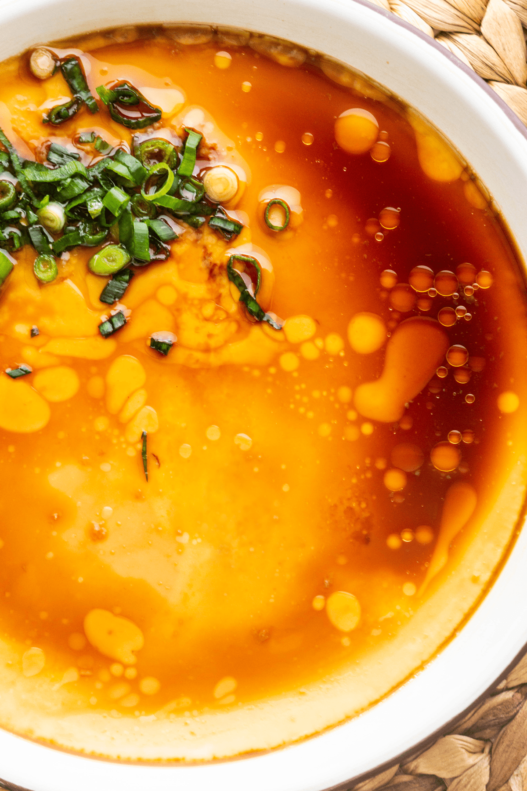

Steamed Egg Custard

Smooth, slippery and heavenly soft, Chinese steamed eggs requires minimum ingredients
yet delivers a delicate look and flavour. Learn how to make it flawlessly.
Recipe
This recipe makes 2 servings
Ingredients
- 2 eggs
- 200 ml warm water
- 1 pinch salt
- 1 teaspoon chives
- 2 teaspoon light soy sauce
- 2 drops sesame oil
Instructions
- Beat the eggs in a bowl.
- Add warm water and salt to the eggs and stir well.
- Pour the mixture into a serving bowl.
- Sprinkle chives over the mixture.
- Cover the serving bowl with cling wrap and poke holes to allow the steam to escape.
- Boil water in a steamer. Place the bowl in when the water is boiling.
- Steam for 10-12 minutes.
- Remove the bowl and season with light soy sauce and sesame oil.
- Enjoy!